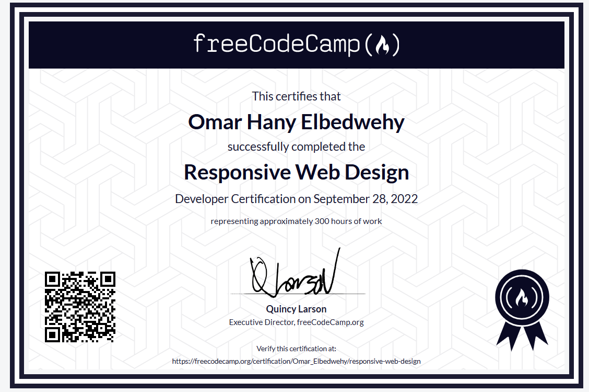
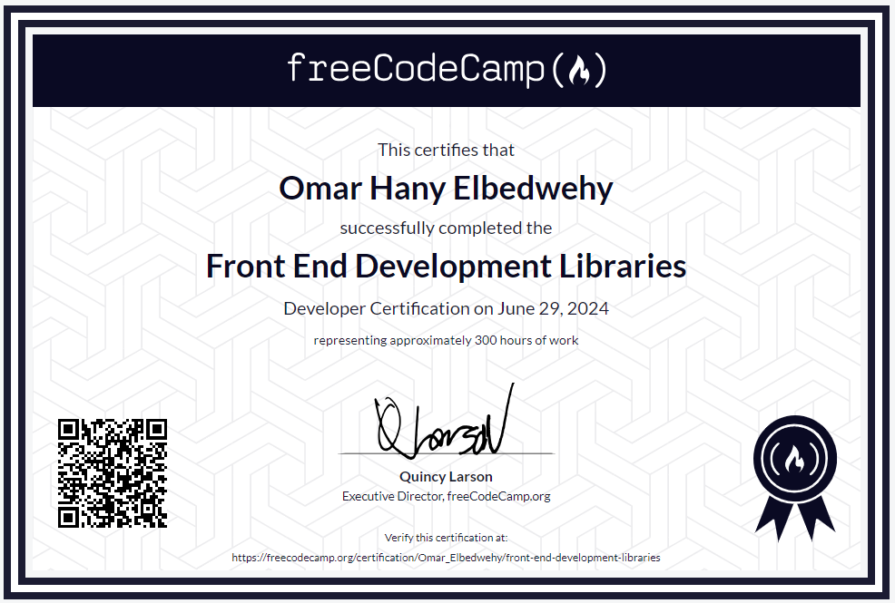
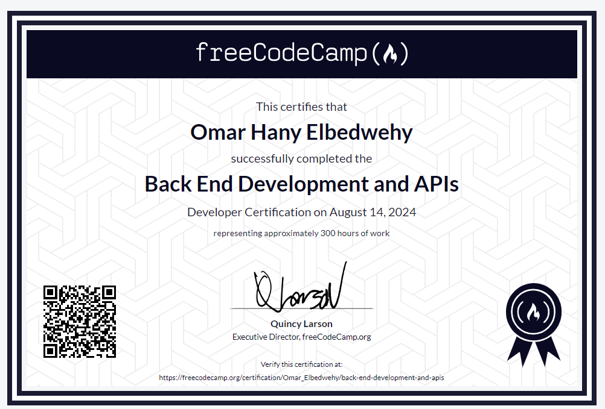

عن عمر البدويهي 👨💻
مطور مواقع يتمتع بخبرة ثلاث سنوات في تطوير الويب، حيث يعمل على كل من الواجهة الأمامية (Front-End) والواجهة الخلفية (Back-End)، مما يجعله مطور Full-Stack قادرًا على بناء مواقع وتطبيقات ويب متكاملة.
مهاراته التقنية:
- Front-End Development: يمتلك خبرة واسعة في تطوير الواجهات الأمامية باستخدام HTML، CSS، JavaScript، مما يمكنه من تصميم صفحات ويب متجاوبة وجذابة تتماشى مع أفضل ممارسات تجربة المستخدم (UX) وتجربة الواجهة (UI).
- Back-End Development: لديه خبرة قوية في تطوير الواجهات الخلفية باستخدام PHP وNode.js، مما يمكنه من إنشاء أنظمة ديناميكية وقواعد بيانات متصلة بالمواقع، مع القدرة على التعامل مع السيرفرات وإدارة البيانات بكفاءة.
- إدارة قواعد البيانات: يمكنه التعامل مع قواعد بيانات مختلفة مثل MySQL وMongoDB، مما يساعد في بناء أنظمة قوية تعتمد على إدارة البيانات بشكل سلس وفعال.
- تطوير التطبيقات الديناميكية: بفضل معرفته بـ JavaScript و Node.js، يمكنه تطوير تطبيقات ويب تفاعلية تعمل بسلاسة مع المستخدمين وتوفر أداءً عاليًا.


